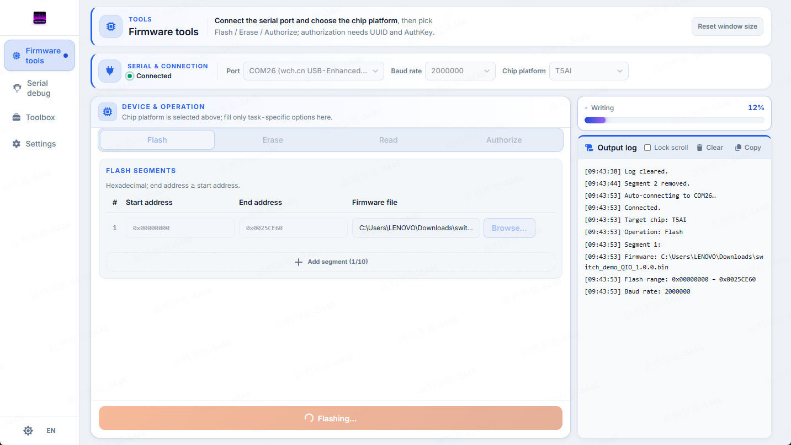
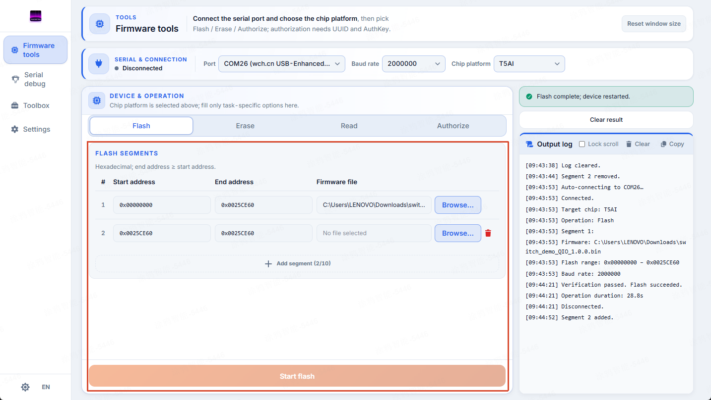
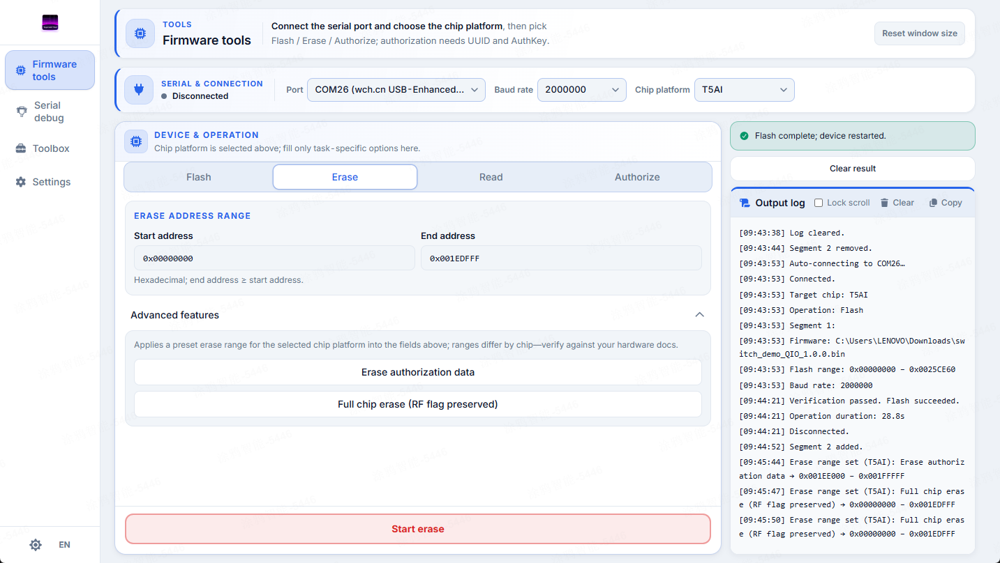
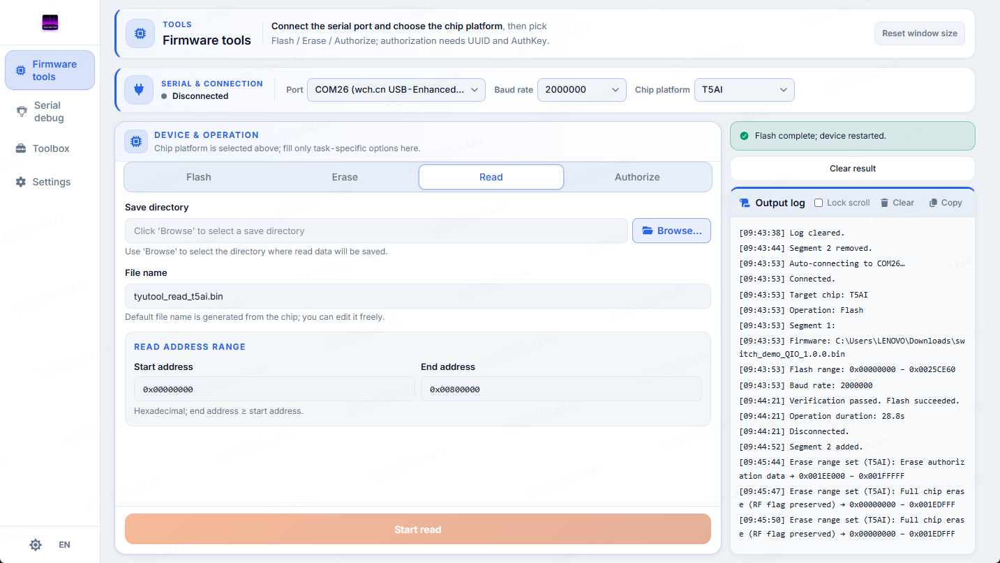
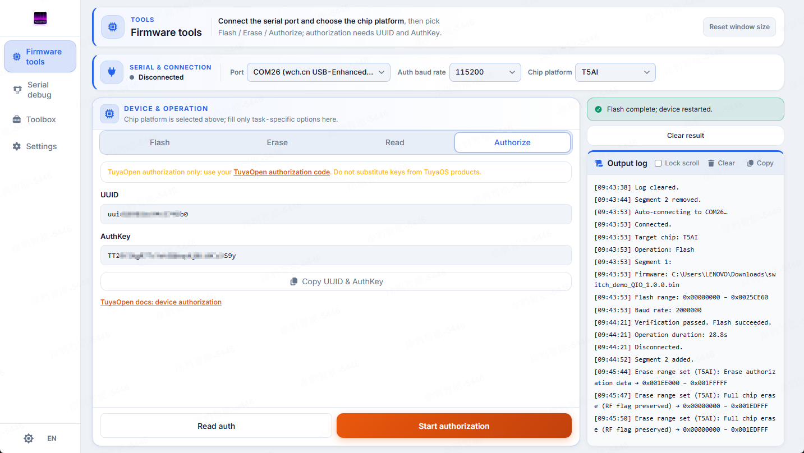
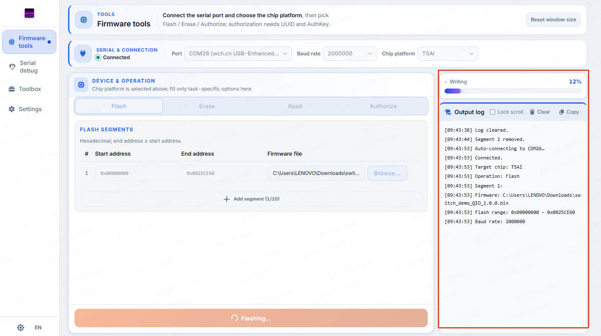

Firmware Flash
This page is the complete reference for the Firmware Flash page: the connection bar, the four tabs (Flash / Erase / Read / Authorize), the chip manifest table, multi-segment flashing, erase presets, and the progress & log aside.
1. Page overview
When you open the Firmware Flash page, the interface is built from three parts:
- Top connection bar: pick the serial port, baud rate, and chip model, plus a status indicator.
- Left/center operations card: four tabs — Flash, Erase, Read, Authorize.
- Right-side progress & log: live per-phase progress and a scrolling log.

2. Connection bar
The connection bar sits at the top of the page and gathers every device-link control:
- Serial port: a dropdown of currently available ports; the list is rescanned each time you open it, so it never goes stale after plug/unplug.
- Baud: offers the common steps
115200/460800/921600/1000000/1500000/2000000, plus a custom entry (range 300–4,000,000). On the Authorize tab this sets the auth baud rate, not the flash baud rate. - Chip selector: choose the target chip model; on the Authorize tab an extra
other(auth-only) option appears. - Status dot: a colored indicator of the current serial connection state (connected / disconnected / in use).
3. Select the chip
The chip model determines three things: the protocol, the default baud rate, and the addressable flash capacity. The table below is the full list of chips tyutool supports (values come from chip-manifests.ts and are authoritative):
Chip (-d) | Flash baud | Auth baud | Flash size | Erase presets |
|---|---|---|---|---|
esp32 | 460800 | 115200 | 4 MiB | fullChip |
esp32c3 | 460800 | 115200 | 4 MiB | fullChip |
esp32c6 | 460800 | 115200 | 8 MiB | fullChip |
esp32p4 | 460800 | 115200 | 16 MiB | fullChip |
esp32s3 | 460800 | 115200 | 16 MiB | fullChip |
t5ai (alias t5) | 921600 | 115200 | 8 MiB | authInfo, fullChipNoRf |
t1 | 921600 | 115200 | 8 MiB | authInfo, fullChipNoRf |
t3 | 921600 | 115200 | 4 MiB | authInfo, fullChipNoRf |
t2 | 921600 | 115200 | 2 MiB | authInfo, fullChipNoRf |
bk7231n | 921600 | 115200 | 2 MiB | authInfo, fullChipNoRf |
ln882h | 115200 | 115200 | 2 MiB | fullChip |
other (auth-only) | — | 115200 | — | none (no flash plugin) |
t5ai. The legacy t5 / T5 ids are aliases of t5ai and are normalized to t5ai automatically.
2000000.
0x1000); the auth-only other chip is exempt — it has no flash to erase. This comes up again in the Erase tab below.
4. Flash tab
The Flash tab writes firmware into the flash. It supports multi-segment flashing: you can write several firmware images to different address ranges in one go — for example a bootloader followed by an app.
The segment table supports up to 10 segments, each with:
- Firmware path: supports
.bin/.hex/.elf/.img, etc. - Start and End addresses: hexadecimal.
Segments chain together automatically:
- Clicking "add segment" sets the new segment's start to the previous segment's end, sparing you the typing.
- When you pick a firmware file for a segment, its end is auto-computed as
start + file size.
The Flash button is only enabled when every segment has a firmware path; if any segment lacks a path, the button stays disabled.

5. Erase tab
The Erase tab clears flash regions. Two ways to erase:
- By address: enter start and end addresses (hex); the UI validates alignment live.
- Advanced — erase presets: per-chip predefined ranges, as shown in the chip manifest table above (
authInfo/fullChipNoRf/fullChip— not every chip has all of them).
Erase preset kinds:
| Preset kind | Meaning |
|---|---|
authInfo | Erases only the authorization region (UUID/AuthKey), keeping firmware and other data intact. |
fullChipNoRf | Full-chip erase but preserves the RF calibration region, so the device can still connect to the network. |
fullChip | Full, complete erase — every region is cleared, including RF calibration. |
Before erasing, a confirmation dialog appears. If the chip requires 4 KiB alignment and your range is misaligned, the dialog explains why and offers an "align" action that rewrites the start/end addresses to the nearest legal aligned boundaries before executing.
0xFF and is irreversible. A full-chip erase in particular wipes RF calibration, which can leave the device unable to connect to the network afterwards. Back up anything important with the Read tab first.

6. Read tab
The Read tab reads flash contents out into a file — the primary tool for backup:
- Save directory: on the Tauri desktop build you choose a save directory; on the web build it is a browser download.
- Filename: defaults to
tyutool_read_<chip>.bin(e.g.tyutool_read_t5ai.bin). - End address: defaults to the chip's full flash size (see the chip table), i.e. a full-chip read by default.
If the target file already exists, a dialog asks you to choose: Overwrite or Append-timestamp (appends a timestamp suffix to the filename so the old file is not clobbered).

7. Authorize tab
The Authorize tab performs TuyaOpen UART authorization, writing the device's cloud credentials (UUID + AuthKey):
- UUID and AuthKey inputs: values are masked and cannot be copied from the field, to prevent leakage.
- Copy credentials button: copies the current credentials out in a controlled way.
- Links to TuyaOpen auth purchase and localized auth docs are provided on the page.
Two operations:
- Read Auth: probes the device's current UUID/AuthKey only; it only occupies the port and writes nothing.
- Authorize: performs the write; it requires UUID and AuthKey to be filled in first. A confirmation prompt precedes execution.
other chip is auth-only — it has no flash plugin and cannot be flashed.

8. Progress & log
The right side of the page is a persistent progress + log panel:
- Per-phase progress bar: shows progress per operation phase (phase); each phase has its own theme color and current percentage; phases with no predictable progress show an indeterminate state.
- Log panel: a scrolling log with three controls — lock auto-scroll, clear, and copy.

9. Port ownership
The Firmware Flash page and Serial Debug share the same ports. They cannot hold the same port at the same time.